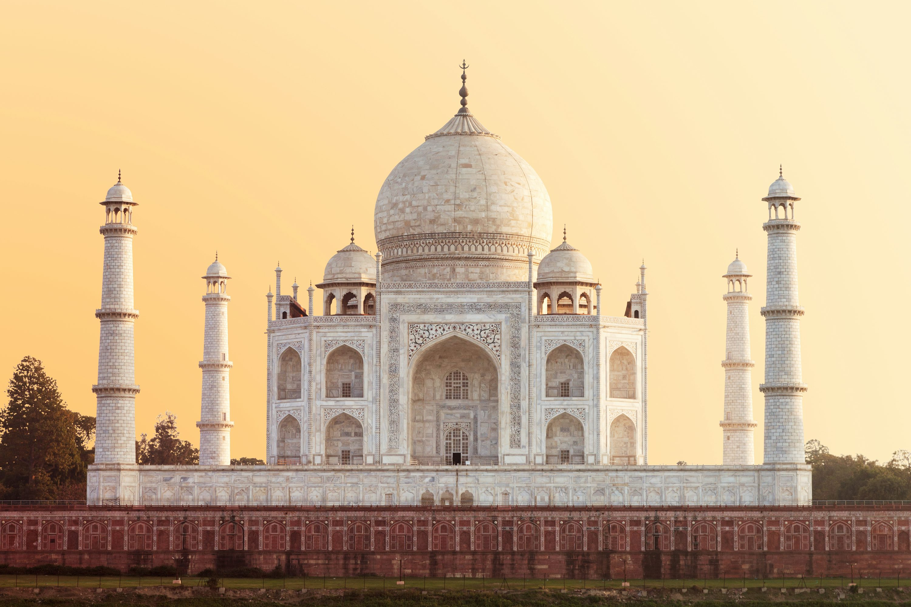
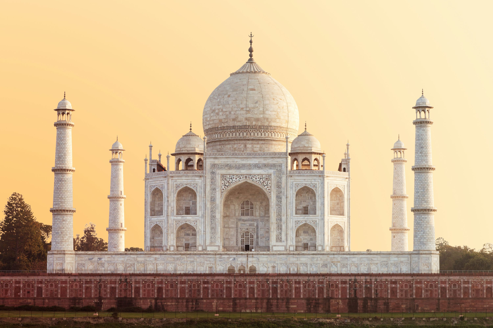

About the Taj Mahal
The Taj Mahal is India’s most famous monument and one of the Seven Wonders of the World. Located in Agra, Uttar Pradesh, this breathtaking white marble mausoleum was built by the Mughal emperor Shah Jahan in the 17th century in memory of his beloved wife Mumtaz Mahal.
Why Visit?
- World-famous symbol of love and beauty.
- Stunning white marble architecture that changes color at sunrise, sunset, and moonlight.
- Beautiful Mughal gardens, fountains, and reflecting pools for peaceful walks.
- A UNESCO World Heritage Site visited by millions every year.
Location & Travel
Nearest Railway Station: Agra Cantt (~6 km)
Nearest Airport: Agra Airport (~13 km)
Well connected by road from Delhi (approx. 3.5–4 hrs drive via Yamuna Expressway).
Visiting Details
- Best Time to Visit: October to March (cool and pleasant weather).
- Timings: Sunrise to Sunset (closed on Fridays).
- Entry Fee:
- ₹50 (Indian citizens)
- ₹1,100 (foreign tourists)
- Children below 15 years – Free
Average Travel Expense
A 1–2 day trip to Agra including food, stay, and transport can cost around:
- Budget: ₹3,000 – ₹4,500 per day
- Mid-range: ₹5,000 – ₹7,000 per day